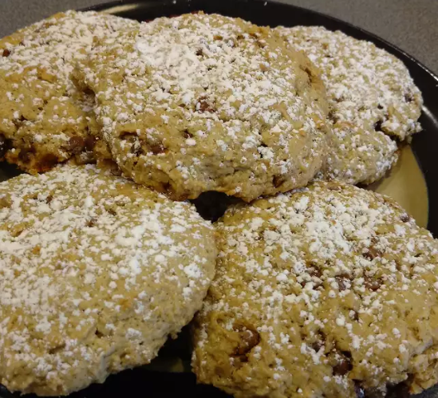

Scones

Description
Here's a wonderful recipe for one of my favourite recipes ever! I eat if every day, even for breakfast to make sure Odi(n) doesn't get it.
Ingredients
- 2 cups all-purpose flour
- 1 1/4 cups quick-cooking oats
- 1/2 cup packed brown sugar
- 2 teaspoons baking powder
- 2 teaspoons ground cinnamon
- 1 teaspoon baking soda
- 1/2 teaspoon salt
- 1/4 teaspoon ground nutmeg
- 1/2 cup butter-flavored shortening
- 1 cup buttermilk
- 2 teaspoons vanilla extract
- 1 tablespoon confectioners' sugar (Optional)
Steps
- Preheat the oven to 375 degrees F (190 degrees C). Line a baking sheet with parchment paper.
- Combine flour, oats, brown sugar, baking powder, cinnamon, baking soda, salt, and nutmeg in a large bowl. Cut in shortening and mix until just a few chunks remain. Add buttermilk and vanilla extract; stir until combined.
- Shape dough into individual scones, about 3 inches across and 1 inch thick. Arrange on the prepared baking sheet.
- Bake in the preheated oven until golden brown, 15 to 20 minutes. Cool for 5 minutes before lightly dusting with powdered sugar.